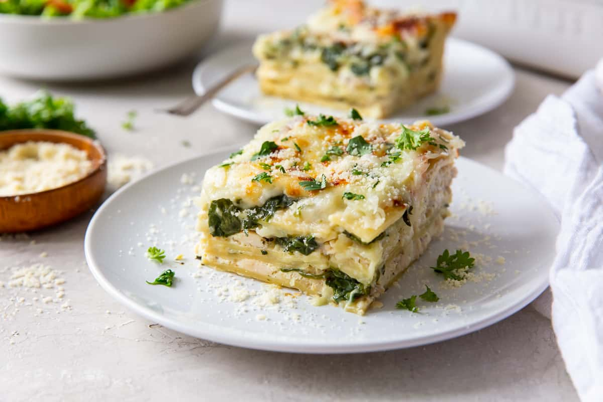
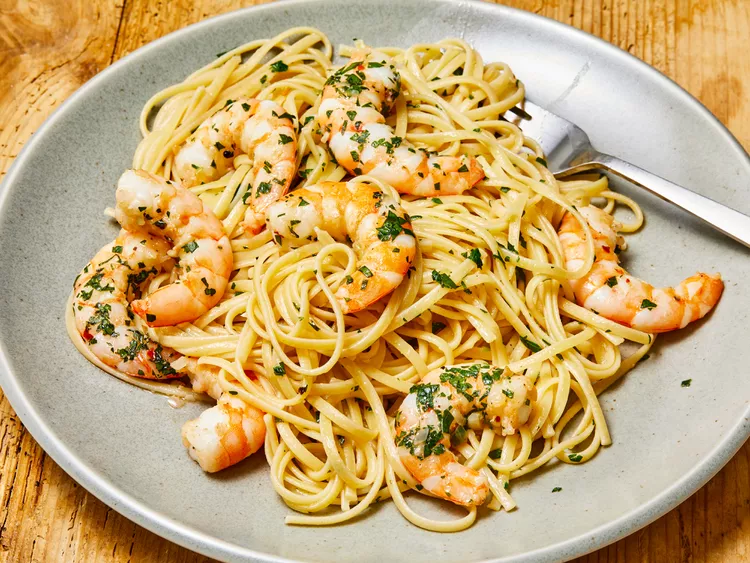
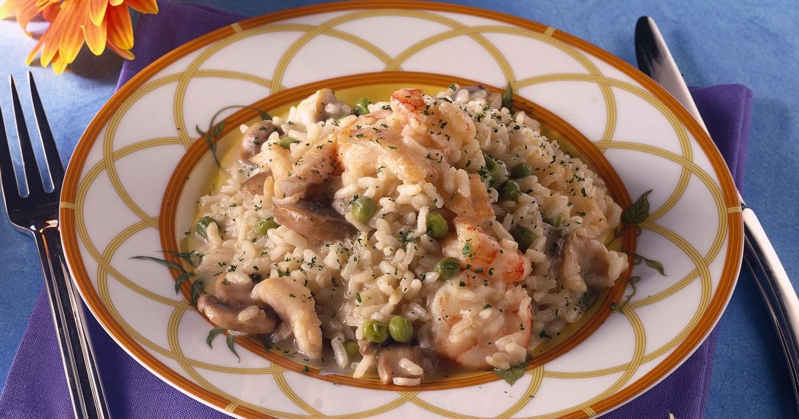

Margherita Pizza
Ingredients:
- 1 pizza dough (you can make your own or buy pre-made)
- 1/2 cup tomato sauce (homemade or store-bought)
- 1 1/2 cups fresh mozzarella cheese, sliced or grated
- 2-3 cloves of garlic, minced
- 1-2 cups fresh basil leaves
- 2 tablespoons extra-virgin olive oil
- Salt and pepper to taste
Instructions:
- Preheat your oven to the highest temperature it can go, usually around 500-550°F (260-290°C). If you have a pizza stone, place it in the oven while preheating.
- Roll out your pizza dough on a lightly floured surface into your desired pizza shape.
- Transfer the rolled-out dough to a piece of parchment paper.
- Spread the tomato sauce evenly over the dough, leaving a small border for the crust.
- Sprinkle the minced garlic evenly over the sauce.
- Place the fresh mozzarella cheese evenly on top of the sauce and garlic.
- Season the pizza with a pinch of salt and a bit of freshly ground black pepper.
- Carefully transfer the parchment paper with the pizza onto a baking sheet or the preheated pizza stone in the oven.
- Bake for about 10-12 minutes or until the crust is golden and the cheese is bubbly and slightly browned.
- While the pizza is baking, chop the fresh basil leaves.
- Once the pizza is out of the oven, immediately sprinkle the chopped basil leaves over the hot pizza.
- Drizzle extra-virgin olive oil over the pizza.
- Slice and serve your delicious Margherita Pizza.

Pizza Alla Diavola
Ingredients:
- 1 pizza dough ball (homemade or store-bought)
- 1/2 cup tomato sauce (homemade or store-bought)
- 1 1/2 cups fresh mozzarella cheese, sliced or grated
- 1/2 cup spicy salami (pepperoni, soppressata, or your choice)
- 1-2 cloves of garlic, minced
- Red pepper flakes to taste (adjust based on your heat preference)
- Fresh basil leaves for garnish
- Olive oil for drizzling
- Salt and pepper to taste
Instructions:
- Preheat your oven to the highest temperature it can go, usually around 500-550°F (260-290°C). If you have a pizza stone, place it in the oven while preheating.
- Roll out your pizza dough on a lightly floured surface into your desired pizza shape.
- Transfer the rolled-out dough to a piece of parchment paper.
- Spread the tomato sauce evenly over the dough, leaving a small border for the crust.
- Sprinkle the minced garlic evenly over the sauce.
- Place the fresh mozzarella cheese evenly on top of the sauce.
- Add the spicy salami slices on top of the cheese.
- Season the pizza with a pinch of salt and a bit of freshly ground black pepper.
- Sprinkle red pepper flakes over the pizza to your desired level of spiciness.
- Carefully transfer the parchment paper with the pizza onto a baking sheet or the preheated pizza stone in the oven.
- Bake for about 10-12 minutes or until the crust is golden and the cheese is bubbly and slightly browned.
- While the pizza is baking, chop the fresh basil leaves.
- Once the pizza is out of the oven, immediately sprinkle the chopped basil leaves over the hot pizza.
- Drizzle extra-virgin olive oil over the pizza.
- Slice and serve your spicy Pizza alla Diavola.

Lasagna
Ingredients:
For the Meat Sauce:
- 1 pound (450g) ground beef
- 1/2 pound (225g) ground pork or Italian sausage
- 1 onion, finely chopped
- 3 cloves garlic, minced
- 1 can (28 ounces) crushed tomatoes
- 2 cans (14 ounces each) diced tomatoes
- 2 tablespoons tomato paste
- 2 teaspoons dried basil
- 2 teaspoons dried oregano
- Salt and pepper to taste
For the Béchamel Sauce:
- 4 tablespoons unsalted butter
- 1/4 cup all-purpose flour
- 4 cups whole milk
- A pinch of ground nutmeg
- Salt and pepper to taste
Other Ingredients:
- 12 lasagna noodles, cooked and drained
- 3 cups shredded mozzarella cheese
- 1 1/2 cups grated Parmesan cheese
- Fresh basil leaves for garnish (optional)
Instructions:
- In a large skillet or saucepan, brown the ground beef and ground pork (or Italian sausage) over medium heat. Break the meat into small pieces as it cooks.
- Add the chopped onion and minced garlic. Sauté until the onion is translucent.
- Stir in the crushed tomatoes, diced tomatoes, and tomato paste. Mix well.
- Add dried basil, dried oregano, salt, and pepper. Bring the sauce to a simmer and let it cook for about 30-40 minutes, stirring occasionally. The sauce should thicken and flavors meld.
Next, prepare the Béchamel sauce by melting the butter, adding flour, and whisking in milk, nutmeg, salt, and pepper. While the sauces simmer, assemble the lasagna by layering meat sauce, cooked noodles, béchamel sauce, and a cheese mixture. Bake until it's bubbly and golden. Let it rest for a few minutes before serving. Garnish with fresh basil leaves if desired.

Casio e pepe
Ingredients
- 8 ounces (about 225g) of spaghetti or other long pasta
- 1 cup grated Pecorino Romano cheese
- 2 teaspoons freshly ground black pepper
- 2 tablespoons unsalted butter
- Salt for pasta water
Instructions
- Begin by bringing a large pot of salted water to a boil. Once boiling, add the pasta and cook until al dente according to the package instructions. Be sure to reserve some of the pasta cooking water before draining the pasta.
- While the pasta is cooking, melt the butter in a large skillet over medium heat.
- Add the freshly ground black pepper to the skillet and toast it in the melted butter for about a minute. This toasting step enhances the flavor of the pepper.
- Using a ladle, add about 1/2 cup of the reserved pasta cooking water to the skillet with the pepper and butter. Stir well to create a flavorful sauce.
- When the pasta is al dente, use tongs to transfer it directly from the pasta pot to the skillet. Toss the pasta with the pepper and butter sauce, making sure to coat the pasta evenly.
- Remove the skillet from the heat, and quickly sprinkle the grated Pecorino Romano cheese over the pasta. Toss the pasta vigorously to create a creamy sauce. If the sauce seems too thick, add a little more pasta cooking water as needed.
- Serve your Cacio e Pepe immediately, garnishing with extra Pecorino Romano and black pepper if desired.

Shrimp Scampi Pasta
Ingredients
- 8 ounces (about 225g) linguine or spaghetti
- 1 pound (about 450g) large shrimp, peeled and deveined
- 4 cloves garlic, minced
- 1/4 cup dry white wine
- 3 tablespoons unsalted butter
- 3 tablespoons extra-virgin olive oil
- Juice of 1 lemon
- 2 tablespoons fresh parsley, chopped
- Red pepper flakes (optional, for heat)
- Salt and black pepper to taste
- Grated Parmesan cheese for garnish (optional)
Instructions
- Cook the pasta: Bring a large pot of salted water to a boil. Add the pasta and cook until al dente according to the package instructions. Drain the pasta, reserving about 1/2 cup of the pasta cooking water.
- In a large skillet, heat the olive oil and 2 tablespoons of butter over medium-high heat.
- Add the minced garlic and red pepper flakes (if using) to the skillet and sauté for about 1 minute, or until fragrant.
- Add the shrimp to the skillet and cook until they turn pink, usually 2-3 minutes per side. Remove the cooked shrimp from the skillet and set them aside.
- In the same skillet, add the white wine and lemon juice. Bring it to a simmer and let it cook for about 2-3 minutes to reduce slightly.
- Stir in the remaining tablespoon of butter, and return the cooked shrimp to the skillet. Cook for an additional 1-2 minutes to heat through and coat the shrimp with the sauce.
- Add the cooked pasta to the skillet, along with the chopped parsley. Toss everything together, adding reserved pasta cooking water as needed to create a creamy sauce.
- Season with salt and black pepper to taste. Squeeze extra lemon juice if desired.
- Serve your Shrimp Scampi Pasta hot, garnished with grated Parmesan cheese (if you like) and extra chopped parsley.

Risotto Alla Pavese
Ingredients
- 1 cup Arborio rice (or any short-grain rice suitable for risotto)
- 1/2 cup dry white wine
- 4 cups chicken or vegetable broth (kept warm)
- 1 small onion, finely chopped
- 2 tablespoons unsalted butter
- 2 tablespoons olive oil
- 1/2 cup grated Parmesan cheese
- Salt and black pepper to taste
- 4 eggs
- Chopped fresh parsley for garnish
Instructions
- In a large saucepan, heat the olive oil and 1 tablespoon of butter over medium heat. Add the chopped onion and sauté until it becomes translucent, about 5 minutes.
- Add the Arborio rice to the saucepan and stir well to coat the rice with the oil and butter. Cook for a couple of minutes until the rice becomes slightly translucent.
- Pour in the white wine and cook until it's mostly absorbed by the rice, stirring constantly.
- Begin adding the warm chicken or vegetable broth, one ladle at a time, to the rice. Stir frequently and allow the liquid to be absorbed before adding more. Continue this process until the rice is creamy and cooked to your desired level of doneness (usually around 18-20 minutes).
- Once the rice is cooked, stir in the remaining tablespoon of butter and the grated Parmesan cheese. Season with salt and black pepper to taste. Remove the risotto from heat, cover it, and let it rest while you prepare the fried eggs.
- In a separate skillet, fry the eggs over easy or to your preferred level of doneness.
- To serve, place a portion of the risotto on a plate and top it with a fried egg. Garnish with chopped fresh parsley.
- Enjoy your Risotto alla Pavese while the yolk from the fried egg creates a creamy, rich sauce for the risotto.